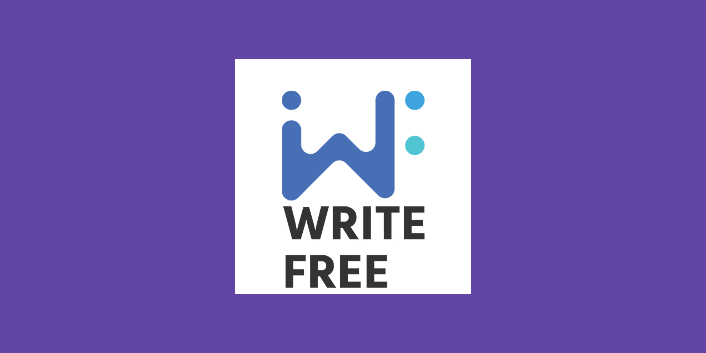
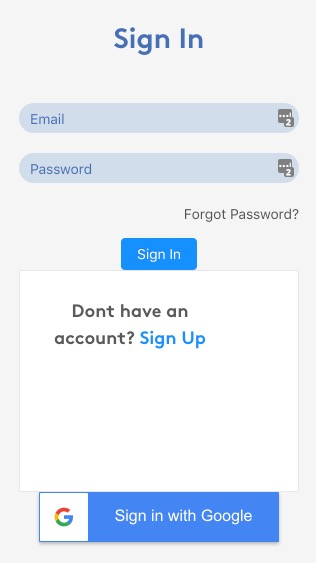
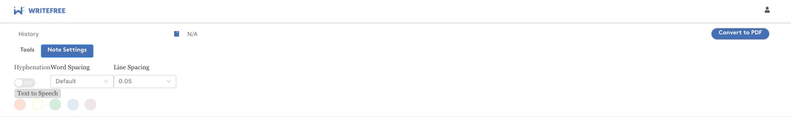
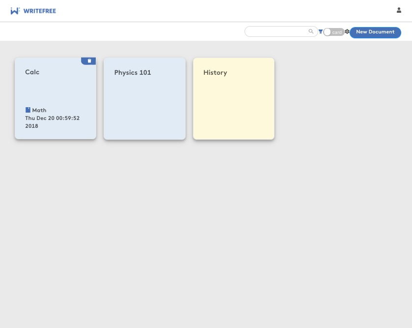
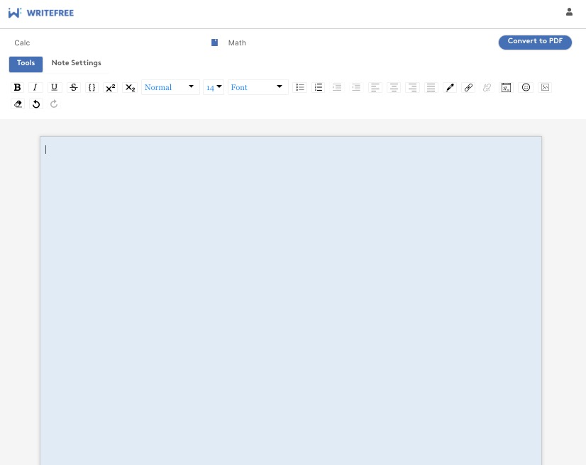
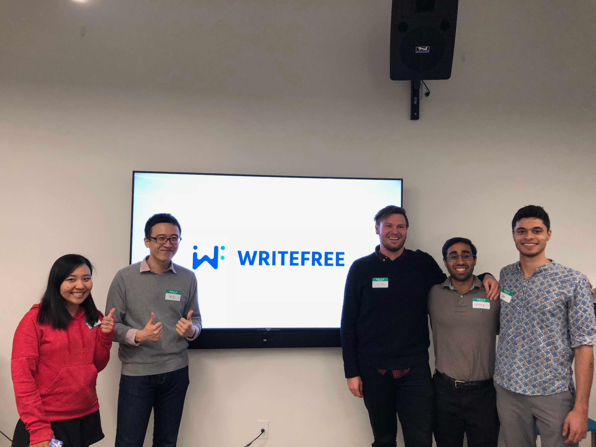

WriteFree

WriteFree is a web-based note-taking application built for dyslexic individuals. Built for the Institute of Ethics in collaboration with BU Spark me, Chirag Aswani and Siqi Zh worked over the course of 4 months to produce a working version 0 of the app.
The aim of this project is to help individuals who are suffering from dyslexia with a free to use web-based note-taking application. Often current solutions are either costly or are not based on the web (and thus cannot be used through a public computer). Some of the dyslexic features we were able to implement were changing the background color of the note, word spacing, line spacing and, text-to-speech.
These features have been proven to help people with dyslexia take notes better. Often other solutions would be to cover the screen with a foil in order to “change the background color” to mimic changing the background color.
Starting from nothing, we built up a secure and encrypted backend with Flask. Utilizing BCrypt hashing to store passwords and JWT tokens to verify requests to the backend were some of the ways we ensured that notes were secure.
We built up our front end using react. To implement most of the design we took from Ant-Design and then used draftjs for the core of the text-editor. Using a verity of npm packages to build out the dyslexic specific features.
Although we were able implement some special features, the bulk of our work was dedicated to building out a solid and reliable skeleton. As this project will be taken over by another team in the future, we wanted to ensure that the code we created was bug free.
After completing the project, we were fortunate enough to win “Best Implemented Project” at BU Spark Demo Day.
